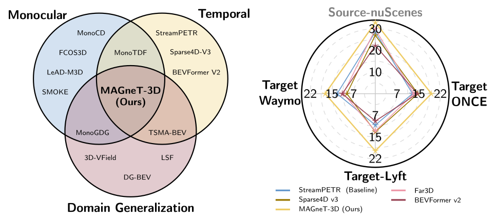
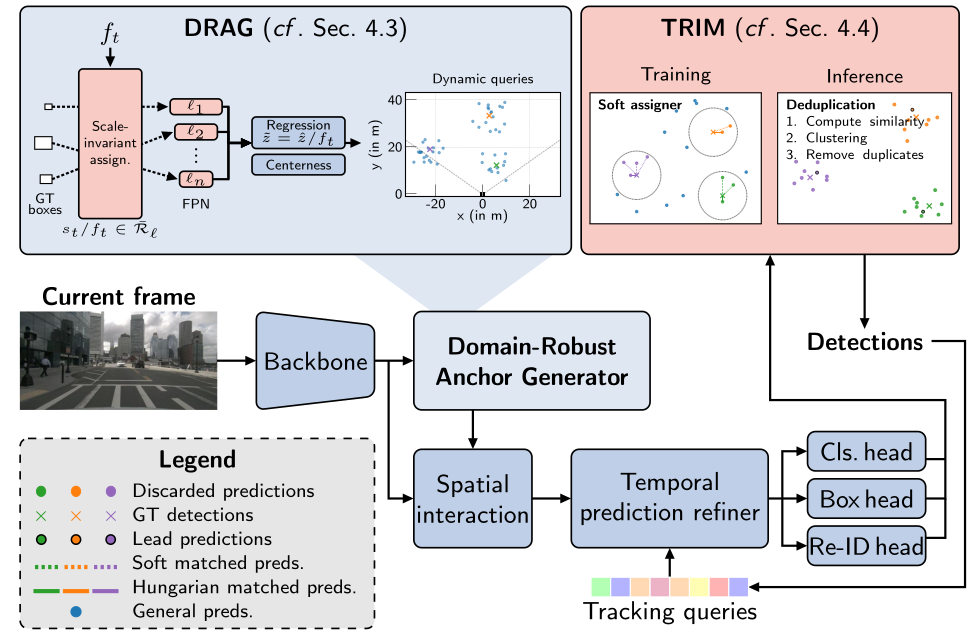
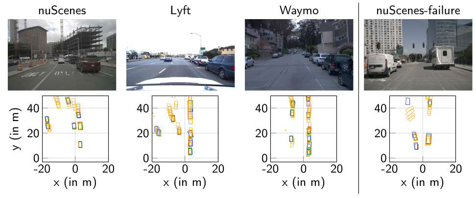

DriveX Workshop, ECCV 2026 · Oral Presentation
1TU Munich 2TU Darmstadt 3ETH Zurich 4University of Cambridge 5MCML 6ELIZA 7DeepScenario
†Equal contribution

Monocular temporal 3D detection aims to detect objects in 3D, given a monocular video. Query-based 3D detectors unify detection and cross-view association, but their learnable queries fit to the spatial distribution of the training data (e.g., field-of-view). We show that this issue is especially severe when these models are applied to monocular video, hindering generalization to unseen datasets and environments. To address this limitation, we introduce MAGneT-3D, the first method for domain-generalized monocular temporal 3D object detection. Instead of relying on static learnable queries, we propose a Domain-Robust Anchor Generation (DRAG) approach that adaptively derives 3D proposals during inference. To further enable domain generalization, we propose a Temporal Refinement and Identity Merging (TRIM) strategy, reducing dependence on specific 3D proposals. To enable comprehensive domain-generalization evaluation, we establish a cross-dataset benchmark spanning nuScenes, Waymo, Lyft, and ONCE. Under zero-shot domain shifts, MAGneT-3D outperforms all baselines, improving NDS from 12.1 % to 18.6 % while also increasing in-domain accuracy.

Query-based detectors represent objects as a fixed set of learnable 3D queries. Training pulls those query reference points toward the locations where the source dataset happens to put its objects, and they are then frozen at inference. They cannot relocate to cover regions outside the source range, so predictions stay confined to the source angular distribution no matter how different the target camera is. MAGneT-3D builds on StreamPETR and replaces the static query set with two components.
Domain-Robust Anchor Generator (DRAG). An FCOS3D head attached to the backbone predicts a projected 2D centre and a depth per frame, which are back-projected with the current intrinsics to form 3D anchors. Two adjustments make this camera-agnostic: the network regresses a focal-normalized virtual depth rather than metric depth, and feature-pyramid level assignment is performed in focal-normalized space against a fixed reference focal length, so an instance always routes to the same level regardless of intrinsics.
Temporal Refinement and Identity Merging (TRIM). Because DRAG’s anchors already lie close to the targets, one-to-one Hungarian matching only ever teaches the refiner to make trivial adjustments — the wrong skill for an unseen domain, where anchors are worse. We instead match each target to several nearby proposals for dense supervision, and train a re-identification embedding with a supervised contrastive loss. At inference, predictions are clustered by that embedding and only the highest-confidence one per cluster is kept, recovering the precision dense supervision costs.
| Method | mAP ↑ | NDS ↑ | ||||||||
|---|---|---|---|---|---|---|---|---|---|---|
| nuScenes | Waymo | Lyft | ONCE | Avg. Cross | nuScenes | Waymo | Lyft | ONCE | Avg. Cross | |
| StreamPETR | 26.5 | 4.8 | 5.0 | 8.2 | 6.0 | 28.5 | 13.1 | 10.6 | 12.7 | 12.1 |
| Sparse4D v3 | 24.8 | 4.4 | 8.6 | 11.1 | 8.0 | 27.0 | 9.5 | 13.1 | 14.7 | 12.4 |
| Far3D | 28.3 | 2.3 | 5.6 | 9.3 | 5.7 | 29.8 | 10.8 | 12.8 | 13.2 | 12.3 |
| BEVFormer v2 | 21.8 | 6.2 | 2.5 | 10.6 | 6.4 | 22.2 | 11.2 | 9.1 | 14.5 | 11.6 |
| MAGneT-3D (ours) | 28.5 | 10.1 | 14.3 | 12.4 | 12.3 | 32.9 | 17.2 | 19.5 | 19.1 | 18.6 |
| Method | mAP ↑ | NDS ↑ | ||||||||
|---|---|---|---|---|---|---|---|---|---|---|
| nuScenes | Waymo | Lyft | ONCE | Avg. Cross | nuScenes | Waymo | Lyft | ONCE | Avg. Cross | |
| StreamPETR | 4.2 | 34.5 | 0.8 | 5.4 | 3.4 | 9.3 | 38.0 | 8.9 | 10.2 | 9.5 |
| Sparse4D v3 | 4.9 | 32.8 | 2.0 | 4.8 | 3.9 | 8.9 | 38.9 | 7.8 | 9.1 | 8.6 |
| Far3D | 1.9 | 36.9 | 0.3 | 2.6 | 1.6 | 7.7 | 39.6 | 7.1 | 7.7 | 7.5 |
| BEVFormer v2 | 2.1 | 11.5 | 1.8 | 5.2 | 3.0 | 6.4 | 15.8 | 8.3 | 10.7 | 8.4 |
| MAGneT-3D (ours) | 13.4 | 34.5 | 13.8 | 9.2 | 12.2 | 18.8 | 39.3 | 19.5 | 14.0 | 17.4 |
| Method | mAP ↑ | NDS ↑ | ||||||||
|---|---|---|---|---|---|---|---|---|---|---|
| nuScenes | Waymo | Lyft | ONCE | Avg. Cross | nuScenes | Waymo | Lyft | ONCE | Avg. Cross | |
| StreamPETR | 1.0 | 0.0 | 27.8 | 5.4 | 2.1 | 5.4 | 4.4 | 32.6 | 11.2 | 7.0 |
| Sparse4D v3 | 2.2 | 1.5 | 32.0 | 3.8 | 2.5 | 6.2 | 6.1 | 37.9 | 7.4 | 6.6 |
| Far3D | 1.3 | 1.1 | 31.0 | 6.8 | 3.0 | 7.3 | 8.4 | 33.0 | 10.7 | 8.8 |
| BEVFormer v2 | 1.4 | 3.8 | 19.4 | 5.5 | 3.6 | 4.2 | 10.7 | 26.0 | 11.8 | 8.9 |
| MAGneT-3D (ours) | 4.0 | 5.2 | 32.5 | 6.0 | 5.0 | 7.7 | 11.6 | 34.5 | 11.9 | 10.4 |
Comparison against state of the art. Each model is trained on a single source dataset and evaluated on all target datasets; Avg. Cross is the mean over the three unseen datasets. In-domain results are greyed and excluded from Avg. Cross. mAP and NDS in % (↑); best per column within the shown training source in bold. Relative to the best baseline, MAGneT-3D improves average cross-dataset NDS by 50 % on nuScenes, 83 % on Waymo and 16 % on Lyft.

| Configuration | DRAG | TRIM | mAP ↑ | NDS ↑ | ||||||||
|---|---|---|---|---|---|---|---|---|---|---|---|---|
| nuScenes | Waymo | Lyft | ONCE | Avg. Cross | nuScenes | Waymo | Lyft | ONCE | Avg. Cross | |||
| 1. StreamPETR (baseline) | – | – | 26.5 | 4.8 | 5.0 | 8.2 | 6.0 | 28.5 | 13.1 | 10.6 | 12.7 | 12.1 |
| 2. + DRAG | ✓ | – | 20.0 | 7.9 | 8.6 | 8.8 | 8.4 | 25.6 | 16.3 | 13.9 | 13.9 | 14.7 |
| 3. + TRIM | – | ✓ | 27.1 | 6.9 | 8.6 | 11.9 | 9.1 | 27.0 | 11.7 | 13.6 | 16.4 | 13.9 |
| 4. MAGneT-3D | ✓ | ✓ | 28.5 | 10.1 | 14.3 | 12.4 | 12.3 | 32.9 | 17.2 | 19.5 | 19.1 | 18.6 |
Main ablation. Neither component suffices alone: DRAG alone raises average cross-dataset NDS to 14.7 but lowers in-domain accuracy to 25.6, and TRIM alone reaches 13.9. Together they reach 18.6 cross-dataset while also raising in-domain accuracy to 32.9.
| Setting | mAP ↑ | NDS ↑ | ||||||||
|---|---|---|---|---|---|---|---|---|---|---|
| nuScenes | Waymo | Lyft | ONCE | Avg. Cross | nuScenes | Waymo | Lyft | ONCE | Avg. Cross | |
| MAGneT-3D (full) | 28.5 | 10.1 | 14.3 | 12.4 | 12.3 | 32.9 | 17.2 | 19.5 | 19.1 | 18.6 |
| w/o Two-phase training | 26.9 | 8.2 | 12.2 | 12.0 | 10.8 | 30.7 | 16.2 | 18.3 | 18.9 | 17.8 |
| w/o Virtual depth | 27.5 | 6.2 | 11.6 | 8.9 | 8.9 | 31.2 | 13.9 | 17.4 | 13.0 | 14.8 |
| w/o Scale-invariant feat. assn. | 17.6 | 6.5 | 5.3 | 7.1 | 6.3 | 23.7 | 14.5 | 12.5 | 11.2 | 12.7 |
DRAG ablation. Each row removes one component from the full model. Scale-invariant feature assignment is the largest contributor (−5.9 NDS cross-dataset without it), followed by virtual depth (−3.8) and two-phase training (−0.8).
| Setting | mAP ↑ | NDS ↑ | ||||||||
|---|---|---|---|---|---|---|---|---|---|---|
| nuScenes | Waymo | Lyft | ONCE | Avg. Cross | nuScenes | Waymo | Lyft | ONCE | Avg. Cross | |
| MAGneT-3D (full, Nkeep = 1) | 28.5 | 10.1 | 14.3 | 12.4 | 12.3 | 32.9 | 17.2 | 19.5 | 19.1 | 18.6 |
| w/ Top-Nkeep clustering (N = 3) | 26.2 | 8.9 | 13.2 | 11.0 | 11.0 | 30.6 | 16.8 | 18.5 | 16.3 | 17.2 |
| w/ Top-Nkeep clustering (N = 5) | 25.7 | 8.5 | 13.1 | 10.5 | 10.7 | 29.9 | 16.5 | 18.4 | 15.6 | 16.8 |
| w/o Clustering | 25.6 | 8.4 | 13.1 | 10.2 | 10.6 | 29.4 | 16.3 | 18.4 | 15.0 | 16.6 |
| w/ Hungarian assigner | 20.0 | 7.9 | 8.6 | 8.8 | 8.4 | 25.6 | 16.3 | 13.9 | 13.9 | 14.7 |
TRIM ablation. Replacing soft assignment with a Hungarian assigner costs 3.9 NDS cross-dataset. Keeping a single prediction per cluster (Nkeep = 1) adds 2.0 NDS over no clustering; retaining more reintroduces duplicates.
@inproceedings{kotb2026magnet3d,
title = {MAGneT-3D: Monocular and Domain-Generalizable Temporal 3D Detection},
author = {Kotb, Mohamed and Meier, Johannes and Reich, Christoph and
Dhaouadi, Oussema and Denninger, Luis and Cremers, Daniel},
booktitle = {European Conference on Computer Vision (ECCV) Workshops},
year = {2026}
}